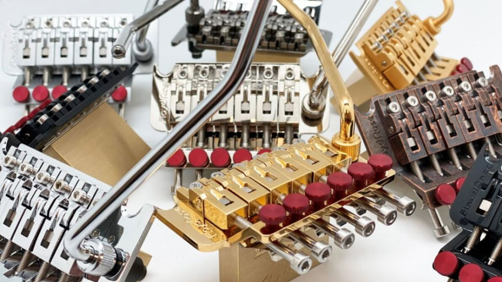
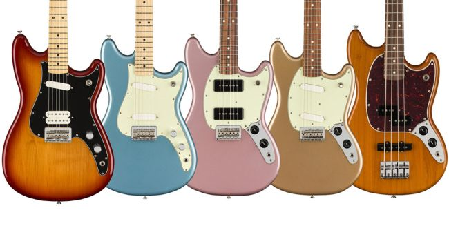

Floyd Rose celebrates 40th
anniversary with limited-edition
double-locking tremolo system

Floyd Rose is celebrating four decades of its double-locking
trem for electric guitars with the new 40th Anniversary
Floyd Rose Original Tremolo System.
The limited-edition bridge boasts a German-made
tremolo base, stainless steel hardware,
titanium insert blocks, an upgraded 37mm
Fat Brass Sustain Block and ruby red fine tuner screws.
Fender releases 5 new
short-scale offset Player Series models

Replacing the Mexican Standard line in 2018,
the Player series made headlines for bringing
all the nostalgia and spirit of the Fender legacy
to those shopping on smaller budgets.
Now, five offset, short-scale electric guitars
and basses have now officially joined the Player line-up,
after being announced at NAMM 2020 -
the Mustang, Mustang 90, Duo-Sonic, Duo-Sonic HS and Mustang Bass PJ.
Steve Vai is planning an entire album
of 8-string instrumental guitars
Steve Vai is well-known as one of the original proponents of the
seven-string guitar
with the iconic Ibanez Universe,
but as of yet, we’ve yet to see any recorded evidence of the
virtuoso wielding an eight-string… but it seems that may change
in the not-too-distant future.
In an interview with Guitar.com,
Vai revealed that he has three new albums in the works -
one of which features his most extended-range compositions yet.